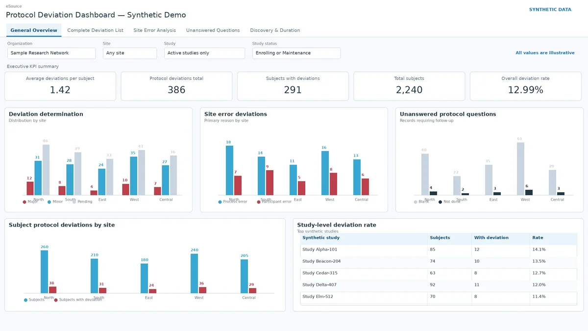
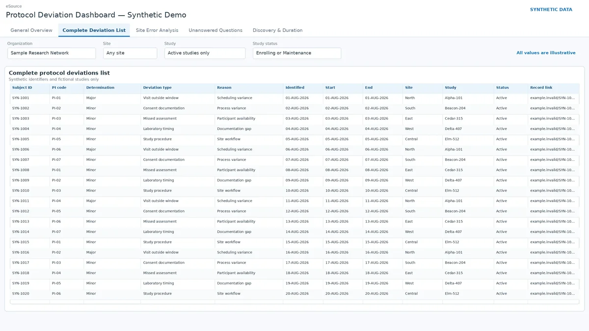
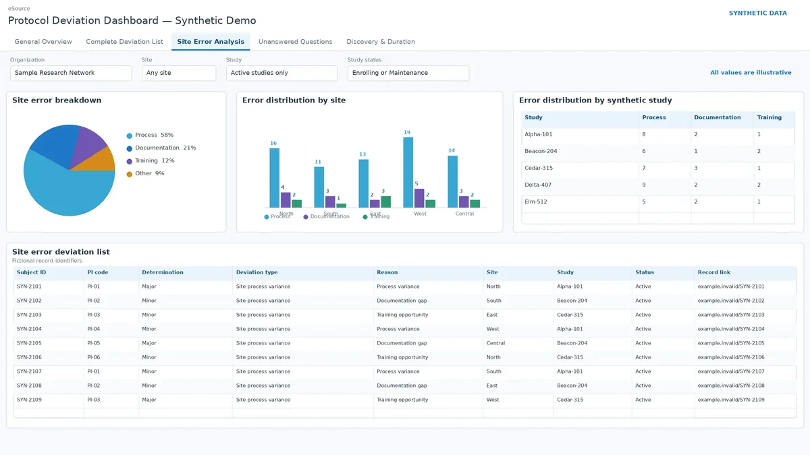
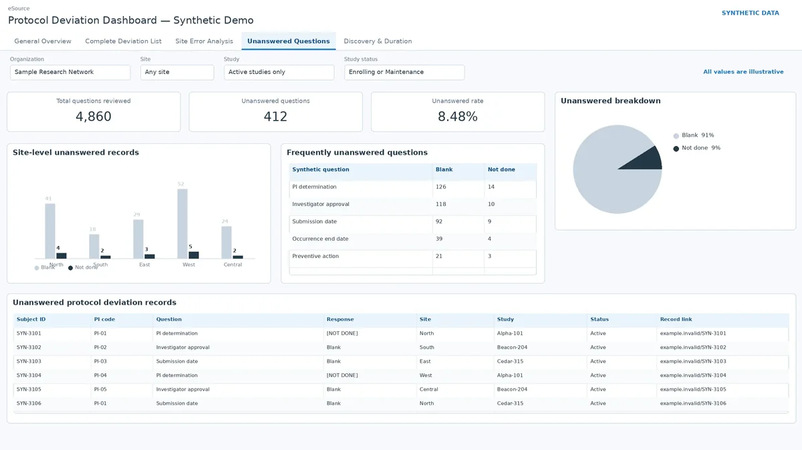
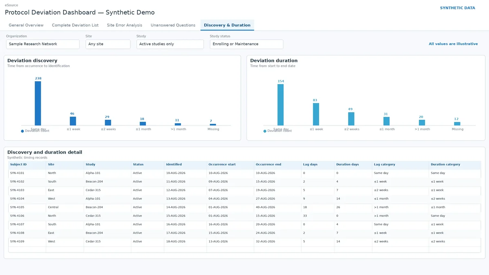

Day job · Looker, SQL
Protocol deviation dashboard
A Looker dashboard I built and presented to Regulatory Affairs, Clinical Ops QC and Quality & Compliance leadership.

The question
Quality and regulatory teams needed to see protocol deviations in one place: how many subjects are affected, which deviation types and site-error reasons come up most, which protocol questions are left unanswered, and how long deviations take to be identified and closed.
What I did
I gathered the requirements, wrote the SQL and KPI logic, designed the five views, validated the numbers, and presented the dashboard to the leadership groups who use it. It covers deviation types, affected subjects, identification delays, lag and duration buckets, and records with invalid or missing dates.
Screens and diagrams



